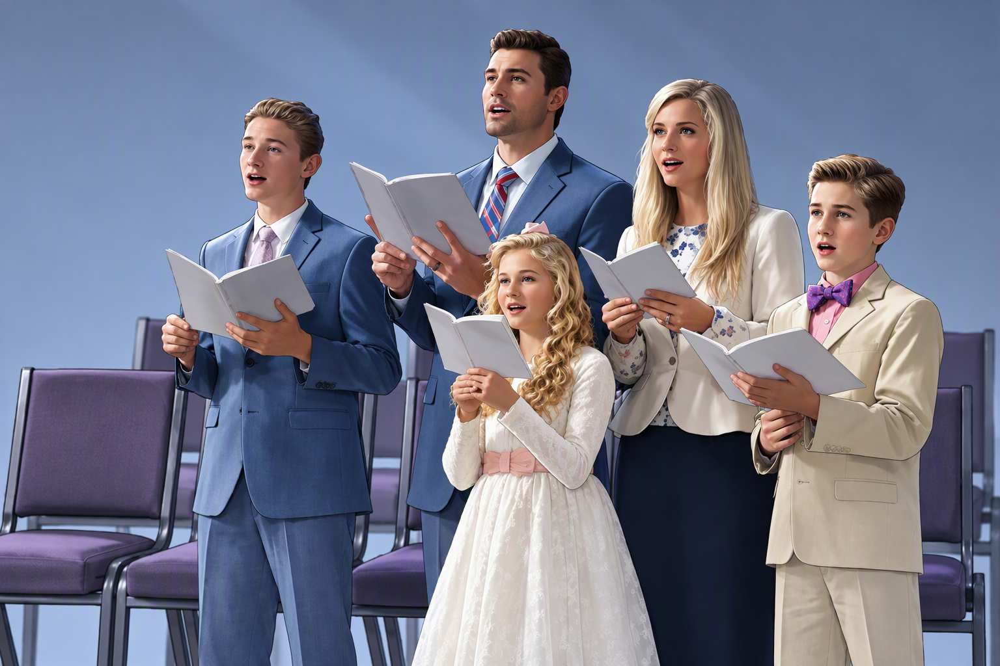

—
Königreichslieder
Sing Out Joyfully

—
Sing Out Joyfully

Lieder LuD+WT
Die Lieder werden jede Woche automatisch aktualisiert (montags). Die manuelle Aktualisierung ist nur für den Notfall gedacht, zum Beispiel wenn die automatische einmal nicht funktioniert hat.